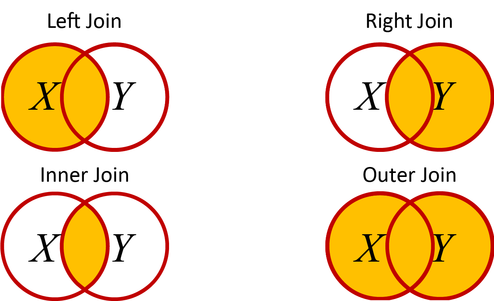
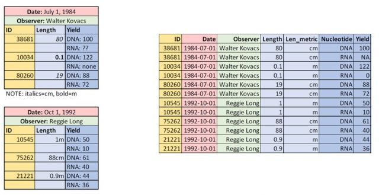

Data Science is a relatively new field of study that merges computer science and statistics to answer questions in other domains (e.g. business, medicine, biology, psychology). Data Science as a discipline has grown in popularity in response to the rapid rate of increase in data collection and publication.
Data Science often involves ‘Big Data’, which doesn’t have a strict quantitative definition but will usually have one or more of the following characteristics:
High Volume – large file sizes with may observations.
Wide Variety – many different types of data.
High Velocity – data accumulates at a high rate.
Compromised Veracity – data quality issues must be addressed otherwise downstream analyses will be compromised.
Question: What are some examples of ‘big data’ in Biology?
Answer: There are many types of biological data that could be listed, but medical records, remote sensing data, and ‘omics data are common examples of ’big data’ in biology.
In biology, it can be helpful to think of Data Science as a continuous life-cycle with multiple stages:
Data Science Life-Cycle
Hypothesize – Make initial observations about the natural world, or insights from other data, that lead to testable hypotheses. Your core biology training is crucial here.
Collect – This may involve taking measurements yourself, manually entering data that is not yet in electronic format, requesting data from authors of published studies, or importing data from online sources. Collecting data is a crucial step that is often done poorly.
Correct – Investigate the data for quality assurance, to identify and fix potential errors. Start to visualize the data to look for outliers, odd frequency distributions, or nonsensical relationships among variables.
Explore – Try to understand the data, where they come from, and potential limitations on their use. Continue visualizing data; this may cause you to modify your hypotheses slightly.
Model – Now that hypotheses are clearly defined, apply statistical tests of their validity.
Report – Use visualizations along with the results of your statistical tests to summarise your findings.
Repeat – Return to step 1.
In this chapter, we focus mainly on coding in R for steps 2, 3, and 6. Step 5 requires a firm understanding of statistics, which is the focus of the book R STATS Crash Course for Biologists. Visualizations in Steps 3 & 4 were covered in earlier chapters.. Step 1 requires a good understanding of the study system, as covered in a typical university degree in the biological sciences.
Data collection and management are crucial steps in the Data Science Life-Cycle. Read the baRcodeR paper by Wu et al (2022) (https://doi.org/10.1111/2041-210X.13405). called baRcodeR with PyTrackDat: Open-source labelling and tracking of biological samples for repeatable science. Pay particular attention to the ‘Data Standards’ section. The baRcodeR and PyTrackDat programs and their application to current projects may also be of interest.
Setup
The tidyverse library is a set of packages created by the same developers responsible for R Studio. There are a number of packages and functions that improve on base R. The name is based on the idea of living in a data universe that is neat and tidy.
The book R for Data Science by Hadley Wickham & Garrett Grolemund is an excellent resource for learning about the tidyverse. In this chapter we’ll touch on a few of the main packages and functions.
Protip In general, any book by Hadley Wickham that you come across is worth reading if you want to be proficient in R.
While we wait for the tidyverse to install, let’s consider a few general principles of data science.
2D Data Wrangling
The dplyr library in R has many useful features for importing and reorganizing your data for steps 2, 3 and 4 in the Data Science Life-Cycle.
library(dplyr)
Warning: package 'dplyr' was built under R version 4.3.2
Attaching package: 'dplyr'
The following objects are masked from 'package:stats':
filter, lag
The following objects are masked from 'package:base':
intersect, setdiff, setequal, union
Note: This error message informs us that the dplyr package uses function or parameter names that are the same as other base or stats packages in R. These base/stats functions are ‘masked’ meaning that when you run one (e.g. filter) then R will run the dplyr version rather than the stats version.
library(tidyr)
We’ll work with our FallopiaData.csv data set, and remind ourselves of the structure of the data
tibbles and readr()
We looked at data.frame objects in the first chapter as an expansion of matrices with a few additional features like column and row names. A tibble is the tidyverse version of the data.frame object and includes a few more useful features. To import a dataset to a tibble instead of a data.frame object, we use read_csv instead of read.csv.
library(tidyverse)
Warning: package 'tidyverse' was built under R version 4.3.2
Warning: package 'readr' was built under R version 4.3.2
Warning: package 'forcats' was built under R version 4.3.2
Warning: package 'lubridate' was built under R version 4.3.2
You may also see a message about conflicts here, with the filter() and lag() functions from dplyr masking the functions from the stats package.
Rows: 123 Columns: 13
── Column specification ────────────────────────────────────────────────────────
Delimiter: ","
chr (3): Scenario, Nutrients, Taxon
dbl (10): PotNum, Symphytum, Silene, Urtica, Geranium, Geum, All_Natives, Fa...
ℹ Use `spec()` to retrieve the full column specification for this data.
ℹ Specify the column types or set `show_col_types = FALSE` to quiet this message.
This file is an example of a 2-dimensional data set, which is common in biology. 2D datasets have the familiar row x column layout used by spreadsheet programs like Microsoft Excel or Google Sheets. There are some exceptions, but data in this format should typically follows 3 rules:
Each cell contains a single value
Each variable must have its own column
Each observation must have its own row
Making sure your data are arranged this way will usually make it much easier to work with.
filter() Rows
The filter() function will subset observations based on values of interest within particular columns of our dataset. For example, we may want to filter the rows (i.e. pots) that had at least 70 \(g\) of total biomass.
Pot1<-filter(Fallo,Total >=70)head(Pot1)
# A tibble: 6 × 13
PotNum Scenario Nutrients Taxon Symphytum Silene Urtica Geranium Geum
<dbl> <chr> <chr> <chr> <dbl> <dbl> <dbl> <dbl> <dbl>
1 60 high high bohem 7.77 51.4 5.13 10.1 0.37
2 67 gradual high japon 2.92 25.2 19.1 23.1 0.06
3 70 gradual high japon 10.1 47.0 18.6 0.64 0.82
4 86 gradual high bohem 2.93 60.9 4.11 6.67 1.27
5 95 extreme high japon 4.92 25.9 40.3 4.92 0.07
6 103 extreme high japon 6.92 49.4 0 10.3 0.42
# ℹ 4 more variables: All_Natives <dbl>, Fallopia <dbl>, Total <dbl>,
# Pct_Fallopia <dbl>
rename() Columns
There are different options to change the names of columns in your data. In base R you can use the names() function with the square bracket index []:
Use the arrange() function to sort the rows of your data based on the values in one or more columns. For example, let’s re-arrange our FallopiaData.csv dataset based on Taxon (a string denoting the species of Fallopia used) and Total (a float denoting the total biomass in each pot).
# A tibble: 6 × 5
PotNum Scenario Nutrients Taxon Total
<dbl> <chr> <chr> <chr> <dbl>
1 1 low low japon 67.1
2 2 low low japon 50.2
3 3 low low japon 61.1
4 5 low low japon 41.7
5 6 low low japon 41.8
6 7 low low japon 48.3
You can also use the colon : to select a range of columns:
X<-select(Fallo, PotNum:Taxon, Total)head(X)
# A tibble: 6 × 5
PotNum Scenario Nutrients Taxon Total
<dbl> <chr> <chr> <chr> <dbl>
1 1 low low japon 67.1
2 2 low low japon 50.2
3 3 low low japon 61.1
4 5 low low japon 41.7
5 6 low low japon 41.8
6 7 low low japon 48.3
Exclude columns with -
X<-select(Fallo, -PotNum:Taxon, -Total)
Warning in x:y: numerical expression has 12 elements: only the first used
Oops, what generated that warning? Take a careful look at the error message and see if you can figure it out.
The problem is we are using the range of columns between PotNum and Taxon, but in one case we are excluding and the other we are including. We need to be consistent:
Suppose we want to make a new column to our data frame or tibble. For example, we calculate the sum of biomass of Urtica and Geranium only. In base R, we could use $ to select the column from the data frame.
X<-FalloX$UrtSil<-X$Urtica+X$Silene
In the dplyr package we can use the mutate() function.
`summarise()` has grouped output by 'Taxon', 'Scenario'. You can override using
the `.groups` argument.
# A tibble: 10 × 5
# Groups: Taxon, Scenario [10]
Taxon Scenario Nutrients Mean SD
<chr> <chr> <chr> <dbl> <dbl>
1 bohem extreme high 58.3 7.34
2 bohem fluctuations high 58.4 9.20
3 bohem gradual high 57.5 9.34
4 bohem high high 60.3 8.68
5 bohem low low 48.0 8.86
6 japon extreme high 57.2 10.9
7 japon fluctuations high 56.4 13.7
8 japon gradual high 59.7 9.57
9 japon high high 56.4 8.20
10 japon low low 52.0 8.29
Weighted Mean
In our dataset, the Taxon column shows which of two species of Fallopia were used in the competition experiments. We might want to take the mean total biomass for each of the two Fallopia species.
However, there are other factors in our experiment that may affect biomass. The Nutrients column tells us whether pots received high or low nutrients, and this also affects biomass:
# A tibble: 2 × 3
Nutrients Mean SD
<chr> <dbl> <dbl>
1 high 58.0 9.61
2 low 49.9 8.66
We can see that the Nutrients treatment had a large effect on the mean biomass of a pot. Now imagine if our sampling design is ‘unbalanced’. For example, maybe we had some plant mortality or lost some plants to a tornado. If one of the two species in the Taxon column had more high-nutrient pots left over, then it would have a higher mean. BUT, what if the nutrients promoted growth? We would expect to see a difference in the mean of each Taxon group, this expected difference is just an artifact of unbalanced replication of the high nutrient treatment. We can simulate this effect by re-shuffling the species names:
# A tibble: 2 × 2
Taxon Mean
<int> <dbl>
1 0 56.1
2 1 56.5
In this example, the difference is less than $ 1%$ of the mean (i.e., \(0.4 / 56.1 = 0.0071 = 0.71%\)), but this could be due to the imbalance offsetting biological differences between the taxa. In other scenarios it could be much larger. To fix this problem, we may want to take a weighted mean. In this case, we want to weight the mean of each taxon by the unbalanced Scenario and Treatment categories.
Step 1: Group by all three columns and calculate group means
# A tibble: 2 × 2
Taxon Mean
<int> <dbl>
1 1 56.6
2 0 55.8
Now there is more than a \(2.1 %\) difference (i.e., \(1.2 / 55.8 = 0.0215\)) between the taxa. This is triple the effect that we calculated with unbalanced samples!
%>% (pipe)
The dplyr package includes a special command (%>%) called a pipe. The pipe is a very handy tool for complex data wrangling. It allows us to string together multiple functions and then pipe our data from one function to the next. In principle, this is similar to the multi-function plotting commands we made with ggplot() in earlier chapters.
The pipe is useful to combine operations without creating a whole bunch of new objects. This can save on memory use and run speed because you are not making new objects for every single function.
Pro-tip: Use Ctl + Shift + m to add a pipe quickly
For example, we can re-write the weighted mean example using pipes.
# A tibble: 2 × 2
Taxon Mean
<int> <dbl>
1 1 56.6
2 0 55.8
We declare the input data set in the first line, and then pipe to group_by() in line 2. The output of group_by() is then *piped to summarise(), and so on. There are two important things to note here:
We do not declare the data object inside of each function. The pipe command does this for us.
We still have to assign the output to an object if we want to retain it. For example, we might change line 1 to wtMean<-RFallo %>%. We didn’t redirect the command to an object, so it simply output to your R Console.
Compared to the earlier example, it is clear that the pipe can make for cleaner, more concise code with fewer objects added to the environment. also avoids potential for bugs in our program. Imagine if we mis-spelled ‘Taxon’ in our second line by accidentally pressing ‘s’ along with ‘x’. Compare the output:
Error in `group_by()`:
! Must group by variables found in `.data`.
✖ Column `Tasxon` is not found.
In both cases we get an error, but in one case we still calculate the means and sd of the two species.
A bug that produces no output is much less dangerous than an error that gives an output. Why?
Join Datasets
The dplyr package has some handy joing_ tools to combine data sets. There are four main ways to join data sets. I find it helpful to think of Venn diagrams when I’m trying to remember what all of these functions do. You can get more information on these with the help command ?join after loading the dplyr library, but here is a quick overview. For each of these, imagine a Venn diagram with two datasets: \(X\) as a circle on the left side and \(Y\) as a circle on the right side. The rows we choose to combine from the two datasets depend on one or more identifying columns that we can define (e.g. sample ID, date, time).

Venn diagram of datasets
left_join() - Keep all rows of X and add matching rows from Y. Any rows in Y that don’t match X are excluded.
right_join() - The reverse of left_join()
inner_join() - Only keep rows that are common to bothXANDY. Remove any rows that don’t match.
full_join() - Keep any columns that are in eitherXORY. Add NA for missing data in either of the columns for rows that don’t match.
To try these out, we can create a couple of quick data sets and compare the output. For each case, note the addition of NA for missing data.
Most of the data examples we’ve looked at are in the ‘wide’ format, where we have a single individual as a row, and multiple measurements as separate columns.
However, there are many cases where we may want to reorganize our data into the ‘long’ format, where each row is an individual observation. Many statistical models use this format, and it’s also useful for visualizations.
Here is one very handy example that I use all the time. If we have a bunch of columns of observations and we want to generate plots quickly (e.g. frequency distributions), we can convert the data to the long format and then use the facet_ functions from ggplot2 to create separate plots for each of the original columns containing the observations.
pivot_longer
The pivot_longer() function in the tidyr library converts data from wide to long. We use the cols= parameter to specify the data columns, then names_to= specifies the column name containing the parameter, and the cols_to= specifies the column name of the values.
This is a bit confusing to read, but it’s easier to understand if you compare the output with the full_join function in the previous section.
# A tibble: 6 × 3
ID Measurement Value
<chr> <chr> <dbl>
1 A Xdat 1
2 A Ydat NA
3 C Xdat 3
4 C Ydat 3
5 B Xdat NA
6 B Ydat 2
This is the long format. Compare to the wide format:
full_join(X,Y,by="ID")
ID Xdat Ydat
1 A 1 NA
2 C 3 3
3 B NA 2
Note how there is only one column of data values, with the Measurement column indicating which measurement the value belongs to, and the ID column is repeated for each measurement.
This is why the long data format is sometimes called the repeated measures data format.
pivot_wider
The pivot_wider() function does the reverse. This time, we specify the column that contains the values with values_from= and the corresponding column names with names_from=. This should recover the original data set:
# A tibble: 3 × 3
ID Xdat Ydat
<chr> <dbl> <dbl>
1 A 1 NA
2 C 3 3
3 B NA 2
Note the slight difference in output.
Question: Can you explain why this output is different than the original?
Answer: The original was a data.frame object, but the output of pivot_longer() and pivot_wider()
Missing Data
So far we have worked on a pristine data set that has already been edited for errors. More often datasets will contain missing values.
NA and na.rm()
As we have already seen, the R language uses a special object NA to denote missing data.
Vec<-c(1,2,3,NA,5,6,7)Vec
[1] 1 2 3 NA 5 6 7
When a function is run on a vector or other object containing NA, the function will often return NA or give an error message:
mean(Vec)
[1] NA
This is by design, because it is not always clear what NA means. Should these data be removed from consideration, or is it a zero to be included in calculations and statistical models? Many functions in R include an na.rm parameter that is set to FALSE by default. Setting it to true tells the function to ignore the NA (i.e., remove it from the calculation).
mean(Vec, na.rm=T)
[1] 4
NA vs 0
A common mistake students make is to put 0 for missing data. This can be a big problem when analyzing the data since the calculations are very different.
Vec1<-c(1,2,3,NA,5,6,7)mean(Vec1, na.rm=T)
[1] 4
Vec2<-c(1,2,3,0,5,6,7)mean(Vec2, na.rm=T)
[1] 3.428571
However, there are many cases where NAdoes represent a zero for purposes of calculation or statistical analysis. There is no simple rule to follow here. The best decision will depend on the specific details of the biological data and the assumptions of the particular calculation or statistic.
is.na()
In large datasets you might want to check for missing values. Let’s simulate this in our FallopiaData.csv dataset.
To set up a test data frame, randomly select 10 rows and replace the value for ‘Total’ with NA.
Question: Can you remember how to do this, from the R Fundamentals Chapter?
Answer: There are many ways that you could approach this. One way is to first randomly select from a vector representing the row number in our data frame. Then, replace the values of these particular observations with NA.
Note that the output is a vector of True/False. Each cell corresponds to a value of ‘Total’ with TRUE indicating missing values. This is an example of a boolean variable, which has some handy properties in R.
First, we can use it as an index. For example, let’s see which pots have missing ‘Total’ values:
Missing<-is.na(Fallo$Total)Fallo$PotNum[Missing]
[1] 9 20 36 55 68 70 78 79 126 138
Another handy trick to check for missing values is to sum the vector:
sum(is.na(Fallo$Total))
[1] 10
This takes advantage of the fact that the Boolean TRUE/FALSE variable is equivalent to the binary 1/0 values. By default, R treats TRUE as 1 and FALSE as 0 if used in any mathematical operation.
Naughty Data
Naughty data contain the same information as a standard row x column (i.e. 2-dimensional) data frame but break tone or more of the following best practices.
Each cell contains a single value
Each variable must have its own column
Each observation must have its own row
Naughty data are very common in biology, this often occurs when either the collector(s) were not familiar with these best practices, or decisions are made to favour human readibility and usability rather than computer interpretability.

Examples of Naughty Data from Wu et al. (2022), shown on the left side. The right side shown well-behaved data, with one observation per row, and column names as the first row.
Naughty data can be very time consuming to fix, but regular expressions can make this a bit easier, as discussed in the Regular Expressions Chapter.
Dates
As biologists, we often work with dates or time. We may want to analyze the date a sample was collected, or a measurement was taken. But dates are often encoded in formats that don’t fit neatly into the usual data types that we’ve worked with so far. The lubridate package provides a convenient framework for switching between human-readable dates and mathematical relationships among them – for example, the number of days, minutes, or seconds between two time points.
library(lubridate)
It can be convenient to automatically include the current date or time, especially when you are producing reports in R.
We can get the date as a date object in the year-month-day format,
today()
[1] "2024-01-29"
And we can get the date along with the time as a datetime object, in the year-month-day hour:minute:second timezone format.
now()
[1] "2024-01-29 20:45:14 EST"
This is an important distinction, because the datetime object extends on the date object to include hours, minutes, seconds, and time zone.
Run Time
We can use a datetime object to track the run time of our code. The run time is how long it takes to run a particular program. We first create an object to store the computer clock before the program runs, then we subtract that object from the computer clock after the program finishes:
Note that your run time may be different, depending on the specifications of your computer and other processes that are running on it.
This technique can be useful for estimating the run time of a large program. Specifically, we run a fraction of the data and/or loop iterations and multiply to get an estimate the run time for the full data set.
Question: If you add a print() function to print out the result in each iteration of the for loop, how much does this slow down the run time?
Answer: Try it to find out!
For a small program like this, it’s not a problem to ad a few fractions of a second. But this can scale up exponentially in ‘big data’ applications. For example, imagine you are sequencing a human genome at 100× coverage, which might typically involve one a billion sequences, each 300 bases long. You want to write a program to assemble all of the sequences into a full genome. How much time would it add to your program run time if you add a 1 millisecond step for each sequence, or each base pair in the experiment?
For each sequence, it would be \(10^9sequences \times 0.001 s = 10^6 s\), or about 11.5 days! For each base pair, multiply by 300 – it would take more than 10 years!
These are problems of scale that don’t matter so much when you are starting out, but developing an efficiency mindset early, it can pay off when we move on to bigger data projects.
Next, we’ll explore the date and datetime objects in more detail.
date Objects
Human-readable dates come in many different forms, which we can encode as strings. Here are some examples that we might see for encoding the end-date of the most recent 5,126-year-long Mesoamerican calendar used by the ancient Maya civilization:
The lubridate package has a number of related functions that correspond to the order of entry – d for day, m for month, and y for year:
ymd(Date2)
[1] "2012-12-21"
dmy(Date3)
[1] "2012-12-21"
mdy(Date4)
[1] "2012-12-21"
dmy(Date5)
[1] "2012-12-21"
Notice the flexibility here! Some dates have dashes, dots, spaces, and commas! Yet, all are easily converted to a common object type. On the surface, these objects look like simple strings, but compare the structure of the date object with its original input string:
str(Date2)
chr "2012-12-21"
str(ymd(Date2))
Date[1:1], format: "2012-12-21"
Notice how the first is a simple chr character object, whereas the second is a Date object. The date object can be treated as a numeric variable, that outputs as a readable date. For example, what if we want to know what the date 90 days before or after?
c(ymd(Date2)-90,ymd(Date2)+90)
[1] "2012-09-22" "2013-03-21"
When using date objects, R will even account for the different number of days in each month, and adjust for leap years!
As with any function in R, we can apply ymd() to a column in a data frame or any other vector of strings:
The elements must have the have the same order as the function, but surprisingly they don’t have to have the same format:
MixVec<-c("2012-12-11","12-20-2012","2012, December 21", "2013, Nov-11")ymd(MixVec)
Warning: 1 failed to parse.
[1] "2012-12-11" NA "2012-12-21" "2013-11-11"
Note the warning and the resulting output. The first, third, and fourth elements are converted, even though they have different formats. The second element is replaced with NA because the order is not year, month, day, as required by ymd().
Because these objects are numeric, we can also use them for plotting:
Question: What do you notice about the x-axis? How would it differ if we used strings instead?
Answer: Try to run the above with DateVec as a string instead of date.
You should get an error, because you can’t bin values of a character variable to generate a frequency histogram. This shows us that R is able to treat the date object as a continuous variable, spacing the bins based on the number of days separating them.
datetime
The datetime object adds a time element to the date. Just as there are different functions to translate different date formats, there are different datetime functions. Each datetime function starts with one of the three date functions we used earlier, but then adds time elements after an underscore _ to define nine different functions. Here are a few examples:
mdy_h("Dec 21, 2012 -- 10am")
[1] "2012-12-21 10:00:00 UTC"
ymd_hm("2012-12-21, 08:30")
[1] "2012-12-21 08:30:00 UTC"
dmy_hms("21 December, 2012; 11:59:59")
[1] "2012-12-21 11:59:59 UTC"
Extracting Components
We can extract components from date and datetime objects. For example, we can extract only the year:
year(Date2)
[1] 2012
or the month:
month(Date2)
[1] 12
We have several options for days.
First, we can get the day of the year, also known as the Julian day:
yday(Date2)
[1] 356
Or the day of the month
mday(Date2)
[1] 21
or the day of the week (rather than month) using wday()
wday(Date2)
[1] 6
We can use the label=T parameter rather than number, to get the name of the specific month or day, rather than the number:
month(Date2, label=T)
[1] Dec
12 Levels: Jan < Feb < Mar < Apr < May < Jun < Jul < Aug < Sep < ... < Dec
wday(Date2, label=T)
[1] Fri
Levels: Sun < Mon < Tue < Wed < Thu < Fri < Sat
Categorical Dates
We’ve seen above how dates are more like numeric objects rather than strings, but we can also treat dates as categorical data.
One example that is becoming more and more common in biology is the analysis of data from data loggers, which automatically save observations over time. Think of climate stations that measure temperature and precipitation as a common example. Another example might be location information of a study organism using image analysis or PIT tags (i.e. Passive Integrated Transponders).
In many cases, the timescale of collection is much shorter than what we need for our analysis. We end up with too much data! Luckily, dplyr with lubridate offer a great combination for summarizing these data.
lubridate + dplyr
Here’s an example that takes advantage that takes advantage of our ability to treat components of datetime objects as categorical variables as well as continuous variables.
Imagine we have observations taken every minute, and we just want to calculate the average for each hour . To see how to do this, we will generate a toy data set in R using the tibble function, and then assigning column names: DayTime for the day-time object and Obs for the observation (i.e. measurement):
First, we create the imaginary dataset, using the replicate function and a random number generator: